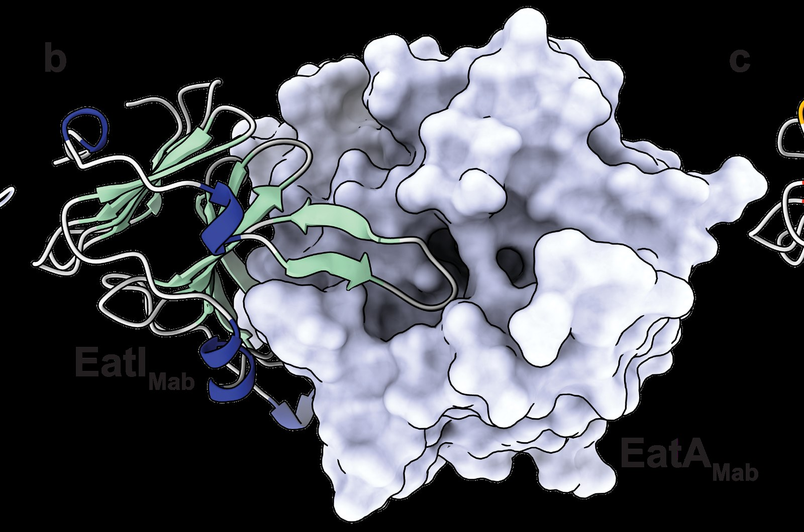

Tuberculosis is humanity’s most ancient disease, with the oldest known patient having died over 9,000 years ago. Today, tuberculosis causes 10 million new infections and over a million deaths each year. Tuberculosis disease is caused by a bacterium called Mycobacterium tuberculosis. This organism is a member of a larger grouping of organisms called the Mycobacteriales. This grouping includes other critical human pathogens such as Corynebacterium diphtheriae and Mycobacterium leprae, which cause diphtheria and leprosy, respectively. Additionally, the group contains several opportunistic pathogens, which only cause disease in people with a weakened immune system.
One such species is Mycobacterium abscessus, which frequently infects the lungs of cystic fibrosis patients, causing severe disease, often requiring year-long courses of antibiotics due to its resistance to many of our commonly used antibiotics. Despite the extraordinary diversity of the Mycobacteriales, they share several common features, the main one being a highly unusual cell wall. Bacterial cell walls are a protective structure which surround the bacterial cell; this structure varies considerably across bacteria and is a feature that allows us to differentiate bacteria.
The cell wall of these bacteria enables extraordinary environmental tolerance to desiccation, osmotic stress and antibacterial drugs, including most known antibiotics. In fact, many specialised antibiotics have had to be developed that specifically target the biological pathways responsible for making this cell wall to treat Mycobacteriales-associated disease. Therefore, study of this ultrastructure has been of intense medical interest for generating new antibacterial treatments. However, this formidable barrier to the outside also raises a challenge for the bacteria: how can the bacteria let critical nutrients in, and how can they secrete molecules which enable them to cause disease?
In our recent paper, we explore one system which enables this latter function. Bacteria have evolved many ways to export proteins out of the cell, and many of these protein export machineries are critical to causing disease in humans. Indeed, M. tuberculosis secretes a protein which directly kills human white blood cells via Type VII secretion systems. The understandable focus on M. tuberculosis as a pathogen has unfortunately skewed our understanding of the Mycobacteriales more broadly, where existing literature treats all Mycobacteriales as the same as M. tuberculosis.
M. abscessus, unlike M. tuberculosis, spends most of its life in the environment. During this time, it likely interacts extensively with other bacteria. In other, better-studied organisms, it is known that closely related bacteria can work together to better colonise certain environments and directly compete with non-related organisms using Type VII secretion systems, like ESX-4 enabling ‘competition’ with our macrophages during tuberculosis disease. However, despite extensive study of M. abscessus, no evidence existed for interbacterial competition in the Mycobacteriales.
Uncovering how bacteria fight one another is crucial for several reasons:
Antibiotic Discovery
Roughly 80% of our clinically used antibiotics originated from bacteria using chemical weapons against their competitors in the wild.
Understanding Disease
Secretion systems used in microbial warfare, such as Type III, V, and VI systems, are often the same systems pathogens use to disable host defenses.
Fundamental Biology
Interbacterial toxins target core cellular processes like DNA, RNA, and protein synthesis. Learning how these toxins kill cells sheds light on the fundamental machinery of life itself.
Uncovering Antibacterial Competition in Mycobacterium abscessus
Given that M. abscessus lives out in the wild and possesses multiple secretion systems, we hypothesised that it might be using one of these systems as a weapon for bacterial competition. At the start of the paper, my PhD work had centred on a new class of enzymes which could cleave and destabilise the mycobacterial cell wall, the GH183 family. Within that work, we identified many species which had many more GH183 loci than anticipated. In all cases, at least two copies of a GH183 enzyme were found in each mycobacterial genome. However, some possessed many more, up to five. Excitingly, the GH183 enzymes were also present in the genome of mycobacteriophage (viruses which infect and kill mycobacteria). This indicated that the GH183 enzymes could both benefit the host and act to kill mycobacteria in the wrong context. At the time, AlphaFold had recently been made publicly accessible, so we busily deposited as many GH183 sequences as we could, and we started to notice that there were distinct subfamilies of GH183 which had a distinctive structural motif which is involved in directing protein substrates of the Type VII secretion system out of the cell.
This was somewhat puzzling, and we couldn’t quite place how this would benefit the bacterium. Intriguingly, right next door to the gene encoding this GH183 protein was a tiny, completely unannotated protein, which AlphaFold predicted to interact very strongly with the GH183.
Based on the literature, this protein was likely an immunity protein, which is a hallmark of an antibacterial toxin system. The immunity acts to prevent the toxin from killing the cell, enabling specific killing of non-related cells. Taken together, we had a reasonable hypothesis that the new GH183 locus was involved in bacterial killing.
How ESX-4 Secretion Systems Deliver Bacterial Toxins

We then wanted to verify that this AlphaFold-predicted structure happens in real life (long live experimental structural biology!). Using X-ray crystallography, we captured images of the toxin:immunity complex, where we found that the immunity did bind to the toxin protein, extending a fingerlike extension all the way to the active site of the enzyme. We then showed that this interaction led to inhibition of enzyme activity using biochemical approaches.
With these data, we were reasonably convinced that this was a toxin:immunity pair. However, the biochemical data was just purified proteins floating in water. We wanted to show that live cells could use this protein to kill other cells, and that indeed the toxin was secreted by ESX-4. To do this, we introduced a version of this locus into a strain of M. abscessus that didn’t possess it. Introduction of this locus caused bacteria to grow approximately 90% slower, and when we overexpressed an inactive version of the enzyme, the protein was no longer toxic. Furthermore, we found that toxicity was dependent on the cell having ESX-4, indicating this was the responsible secretion system. Then furthermore, when we grew the toxin-producing bacteria alongside a sensitive ‘prey’ strain, the prey’s growth dropped by about 20%, a clear sign of interbacterial intoxication.
So, to summarise the data so far
- GH183 enzymes are found across nature, within mycobacteria where they help the bacteria to grow, and within organisms that prey on mycobacteria such as mycobacteriophage, indicating that GH183 enzymes aren’t all good guys.
- One subfamily of GH183 enzymes is encoded at a consistent genomic location which encodes a small protein adjacent which likely forms a complex with the GH183.
- Structural data show that the complex occurs in nature, whilst biochemistry shows this interaction inhibits enzyme activity.
- Expression of the toxin without the immunity causes toxicity in mycobacteria, in a way that is dependent on ESX-4, demonstrating the toxicity is Type VII-dependent.
- The toxin can act to kill competing bacteria, indicating a role in competition.
Why Studying Interbacterial Toxins Matters for New Antibiotics
The Mycobacteriales are a critical human health threat, causing millions of deaths each year, and costing governments billions of dollars each year to manage. Recently, drug development efforts for these difficult-to-treat organisms have yielded few results. This indicates that we critically need new drugs, and new understanding of how these bacteria kill each other in the wild. Our paper has challenged the old paradigm established by M. tuberculosis: that these bacteria exist in isolation, with their sole competitors being the patient they infect. These data make it clear that they extensively interact with other bacteria in the environment. Understanding these toxins (and there are many, many more than the one we studied here) has the potential to inspire new classes of antibiotics and therapies against drug-resistant infections. The CombaT7 consortium is now working on tapping this arsenal of Type VII associated toxins to this very end.